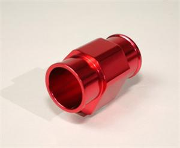

-
I've searched for quite a while and read other posts, but most pertain to the "radiator probe" type thermostat switches and that's not what I want to end up with.
Being that the coolant flows from the thermostat, I could weld the bung in the steel lower pipe and get a pretty accurate temp, correct? I saw one posted somewhere that had the weld bung on the upper pipe that passes through the front frame section. With that, the coolant has time to cool through the radiator and the temperature will be pretty far off from the temp of the coolant in the engine, or does it really matter?
The switch I will be threading into the bung I weld up is a 190on/170off. Thanks in advance for help and advice on this. If I totally missed a thread about this, I apologize.
-Darkwind -
Why bother welding? You can buy a hose connector that is already threaded. Then you have the option of various locations if you decide to move it around, and the temperature readings will be more accurate than having the probe right next to the block.

Link …
Made from 6061 Aluminum this in-line radiator hose adapter will make installing your temp. Sender a breeze…This will place the temperature sensor directly in the stream of the water towards the radiator without absorbing transient heat from the engine block for accurate readings of the water temperature. Four sizes are available for the perfect fit for just about any engine application and stays water-tight to prevent leaks with the provided hose clamps. Each adapter features an 1/8â NPT fitting. Simply insert into your upper radiator hose and tighten the hose included hose clamps. Measure the inside diameter in to choose the correct size for your vehicle.
-
Thanks for the fast reply. I failed to mention I'm using a 3/8NPT fitting. That is a nice piece though. I'm going to take a look into this later and see if one fits my needs, but it's bedtime (I'm graveyard shift)
My reasons for welding bung and using the 3/8NPT switch, I have the parts already, and I love to weld stuff! Plus, I'm looking to get as close to the engine as I can with the switch to try to get as accurate ECT as possible.
-Darkwind
EDIT: Had to add more info -
According to the fsm the hot coolant leaves the engine through the upper radiator hose. that is why i put mine an that metal connector.Darkwind wrote: I've searched for quite a while and read other posts, but most pertain to the "radiator probe" type thermostat switches and that's not what I want to end up with.
Being that the coolant flows from the thermostat, I could weld the bung in the steel lower pipe and get a pretty accurate temp, correct? I saw one posted somewhere that had the weld bung on the upper pipe that passes through the front frame section. With that, the coolant has time to cool through the radiator and the temperature will be pretty far off from the temp of the coolant in the engine, or does it really matter?
The switch I will be threading into the bung I weld up is a 190on/170off. Thanks in advance for help and advice on this. If I totally missed a thread about this, I apologize.
-Darkwind86na2t + holset
feedback
viewtopic.php?f=18&t=6114&hilit=andrew+gardner -
… I'm confused now. I've looked through the FSMs to see the direction of the thermostat. I've never pulled the t-stat housing off (only had a few weeks, still knocking off dust) but the picture shows the tip is facing the coolant pipe. I've always known that to indicate the direction of flow.
But like I just said, I haven't pulled the t-stat housing off to verify the facing of the thermostat. This is the reason for posting this thread.
I like the positioning of the weld bung in the upper pipe, and I intend to do something similar if indeed the direction of flow is top-down (9 cars out of 10), or bottom-up. I need to scan the FSM some more, but input would be very much appreciated.
Thanks again for all the help,
-Darkwind -
For others interested in this there's many nissans equipped with a/c thermo switches for auto climate systems that are inline on coolant hoses. Just go to your local wreckers and your guaranteed to find one. I haven't the faintest at what temp they activate the a/c condensor fans. Peace."Its the s12's sexy over weight step daughter, the z31" -
[attachment=0:9tghxfq9]coolent.jpg[/attachment:9tghxfq9]86na2t + holset
feedback
viewtopic.php?f=18&t=6114&hilit=andrew+gardner -
You rock. I appreciate that. That's my lesson learned for today. Now I can sleep well. Now to get working on that new steel pipe.
-Darkwind -
Easy way to find out. Start car, wait 2 minutes, place hand on both tubes and see which one is warmer.

1988 300zxt. gt35, stance, etc. Wheels: Varrstoen ES2 18x9.5 et-13 225/40. 18x10.5 et0 245/40
1990 jetta vr6'd -
Turbo Radiator = remove crappy A/C Fan switch and fit a Standard Motor Products TS189 (92 Sentra) switch, and cover the factory plug, and wire that sensor into your e-fan setup.
TS189 = 191 degrees on, 181 off. (their temps in the companies cross reference book are wrong, i tested them).
I don't know why you'd want 170 off. There's no reason to keep the thermostat cycling closed and open at 170 degrees and then 175.
If you can bring temps down at a stop light to just over operating temperature, you will continuously purge coolant from your block, and you will make your thermostat last longer without exercising the spring every time you drive the car and come to a stop light. if you bring the temps down to above 175… like 180. you'll be in operating temperature, and you will cycle coolant.
at least that's how i see it!
If you have a good efan, chances are you won't need that shitty condensor fan. -
Thanks A LOT! I've found other switches with a 200(on) and 180(off), but the other is what I had on hand. I now know what I'm going to put in her though. I'm looking at one in the Painless catalog I may be ordering today.Careless wrote: Turbo Radiator = remove crappy A/C Fan switch and fit a Standard Motor Products TS189 (92 Sentra) switch, and cover the factory plug, and wire that sensor into your e-fan setup.
TS189 = 191 degrees on, 181 off. (their temps in the companies cross reference book are wrong, i tested them).
I don't know why you'd want 170 off. There's no reason to keep the thermostat cycling closed and open at 170 degrees and then 175.
If you can bring temps down at a stop light to just over operating temperature, you will continuously purge coolant from your block, and you will make your thermostat last longer without exercising the spring every time you drive the car and come to a stop light. if you bring the temps down to above 175… like 180. you'll be in operating temperature, and you will cycle coolant.
at least that's how i see it!
If you have a good efan, chances are you won't need that shitty condensor fan.
I'm going to be using a pair of fans, on a custom aluminum shroud I have made. The entire A/C system has been removed, so the "shitty condenser fan" has since been pulled out, and thrown in the trash.
Thanks again for the information.
-Darkwind

Copyright © 2006–. All rights reserved. Privacy Policy